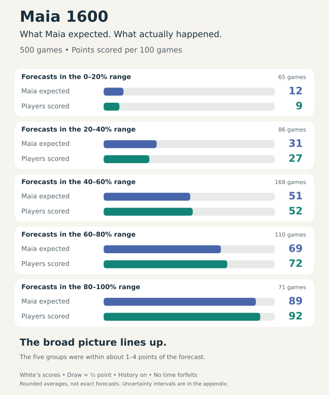
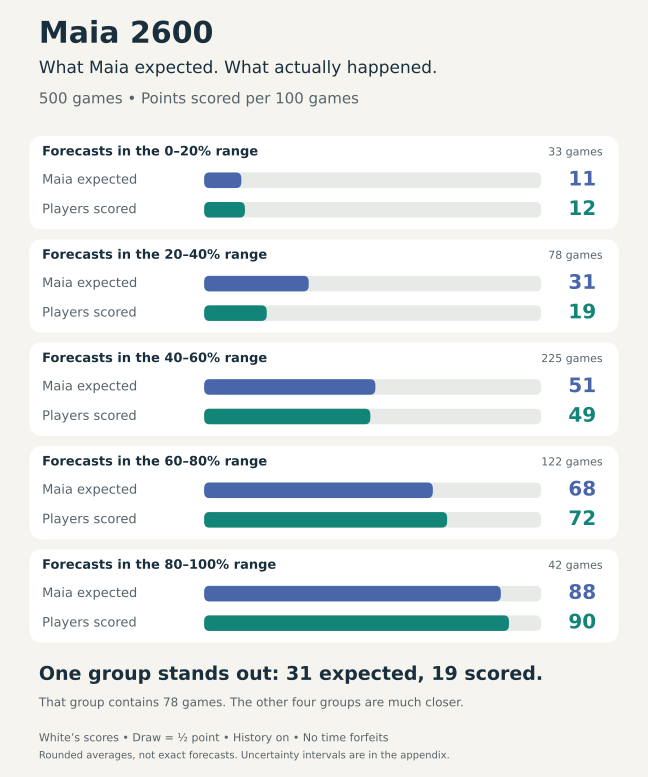
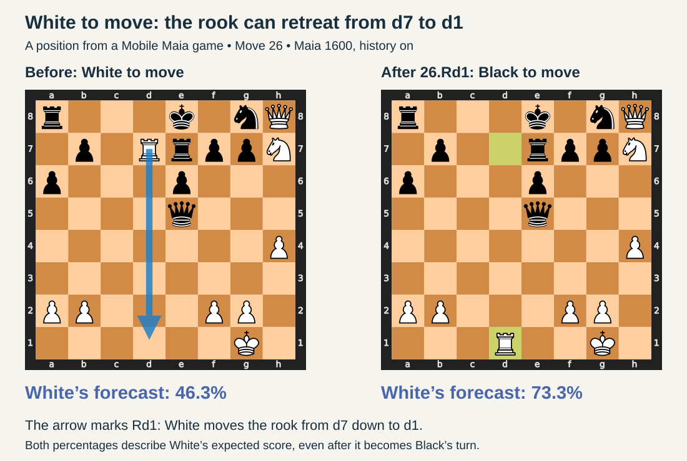
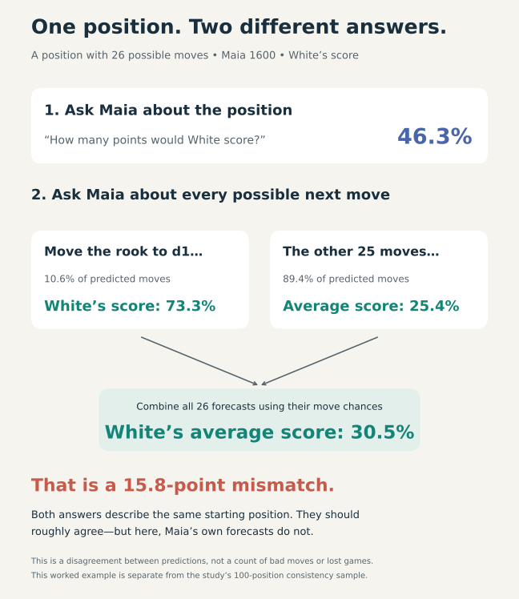

Maia’s score is a useful guide to who is favoured. Treat the exact percentage as an estimate, especially when it changes sharply after a move.
In Mobile Maia, the score percentage forecasts how human players at a given rating would do from the position on the board. This guide looks at the M1600 and M2600 estimates: predictions for players around 1600 and 2600.
What does the percentage mean?
Imagine many games continuing from the same position. A forecast of White 60% means Maia expects White to earn about 60 points per 100 games, with a win worth 1 point and a draw worth ½. For example, 50 wins and 20 draws would earn 60 points. Black would earn the remaining 40.
This is different from a move percentage, which predicts how likely a player is to choose a particular move. It is also different from Stockfish’s evaluation: Maia is forecasting human results, including human mistakes.
All the charts below show the score from White’s perspective.
How well does it match real games?
We checked 500 human games near 1600 and 500 near 2600, taking one position from each game and comparing Maia’s forecast with the eventual result. All were online blitz games; games ending in a time forfeit were excluded.
Higher forecasts generally went with better results. At both ratings, Maia was more informative than always predicting an even score.
The charts group similar forecasts together. Read each pair of bars: blue is what Maia expected; green is what the players actually scored. Close bars mean the forecast matched the results for that group.
Maia 1600: the groups line up well
Across the five groups, forecasts and results were within about 1–4 points per 100 games of each other.


Maia 2600: useful, but one group was too optimistic
In the group where Maia’s forecasts averaged 31%, White actually earned about 19 points per 100 games. That group contained 78 games. The other four groups were within about 1–4 points.
So a higher Maia rating does not automatically make the score more trustworthy.


Why can the score jump after a move?
Playing a good move can improve the forecast. Before the move, Maia has to allow for the possibility that the player will choose something weaker. Once the good move is on the board, that uncertainty is gone.
But the model’s predictions can also fail to fit together. To check this, we compared its score for a position with the average of its scores after every legal move, giving likely moves more weight than unlikely ones. Those two forecasts should roughly agree.
A rook retreat changes the forecast
The boards below show a position from a Mobile Maia game, before and after White’s 26th move. White’s rook starts on d7. The blue arrow shows it retreating to d1—written 26.Rd1 in chess notation.


With Maia 1600 and move history on, White’s forecast rises from 46.3% on the left to 73.3% on the right. Both numbers are White’s score, even though it is Black’s turn on the right. The jump itself is understandable: Maia gives White better prospects after this rook move.
Does the forecast before the move account for all White’s choices? There are 26 legal moves in the position on the left. Maia predicts that a 1600-rated player would choose the rook retreat about one time in ten. It gives White much lower forecasts after most of the other choices. The diagram below combines those possibilities, weighting each by its predicted chance of being played.


Combining all 26 possibilities gives 30.5%, well below the original 46.3%. That 15.8-point gap shows that Maia’s forecasts do not fully fit together here. Both numbers are predictions; the comparison cannot tell us which is closer to the true scoring chance.
In a separate check of 100 positions, gaps larger than 10 percentage points occurred in 9 positions at 1600 and 15 at 2600. This measures consistency between predictions, rather than how often Maia gets the winner wrong.
How to use the score while playing
- Look at the broad picture: roughly equal, one side favoured, or a strong advantage.
- Avoid reading too much into a few points. A change from 58% to 61% is not a precise measure of improvement.
- Look at the moves when the score jumps. It may reflect a good move being found, an inconsistent forecast, or both.
- Use move analysis alongside the percentage. The score describes human prospects; the moves help explain what makes the position promising or difficult.
The app’s optional move-history setting lets Maia consider the preceding positions. Turning it on or off made no clear difference to score reliability in this study.
Detailed results and limitations → · Data, methods and reproduction →
Text and original figures are published from the same pinned research snapshot. Data, methods and reproduction ↗